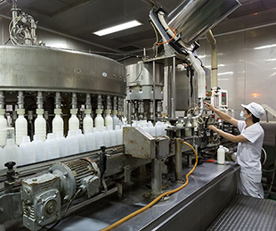

漫山螢海 人間星光點點
四月中下旬的臺中東勢林場很不尋常，清風徐徐，月光照亮夜裡的森林，人影雜沓卻異常安靜..
閱讀更多
踏進這片土地，感受這片心意
在地夥伴，真心交陪

四月中下旬的臺中東勢林場很不尋常，清風徐徐，月光照亮夜裡的森林，人影雜沓卻異常安靜..

「田力，就是我的男啊！這是我老婆的idea喔！」初次見面，田力精緻安全蔬果（LandsPower）..
造福酪農 玉米變黃金田
除了人吃的玉米外，臺灣還有一群人正種植著一種專門提供酪農業用以產乳的飼料玉米，叫作「青割玉米」..
閱讀更多
百花齊放的土地精彩
宜蘭羅東的豆奶、彰化花壇的茉莉花茶、屏東內埔的可可、...
閱讀更多
斗南町越光米 一口入魂
打開飯鍋，濃郁的米飯香氣，隨著蒸氣瞬時瀰漫了整間屋子，「嗯，這個味道就對了。
閱讀更多
霧峰故事館
臺三線舊省道旁，矗立著一棟小巧優雅、兩層樓高的白色建築，和兩旁的綠色稻浪相應，散發悠閒情調。
閱讀更多
澎湃辦桌吃遍全臺好食材
二十四節氣不僅是傳統曆法，也是農民生活守則，季節食蔬吸取了大地精華和充沛陽光，長出茁壯飽滿果實。
閱讀更多
守護乳品安全
巨大的廠區，轟隆隆作響，此起彼落，節奏分明，各種輸送配管、儲存槽、作業槽、充填區等各據一方...
閱讀更多
農業與土地的對話
「我從國中就想逃離家鄉！」返鄉承接父親志業，先後成立有機肥生產合作社、..
閱讀更多
一百顆印章的託付
「這應該是全臺最大的單一玉米田。」謝勝麒指著位在嘉義縣義竹鄉田間道路旁的一片玉米田，..
閱讀更多
搶佔日本冬季市場
每年十一月到隔年三月，正是嘉義新港鄉洋桔梗花出貨到日本的高峰期。..
閱讀更多

不只收藏，更實踐這一份美好